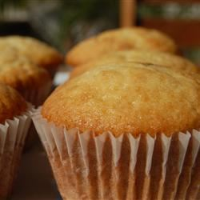

Vanilla Cupcakes
Recipes Page
A tasty little cupcake, which is easy to make. It's only plain vanilla-
which is sometimes all you need.

Ingredients
- ⅔ cup butter, softened
- ¾ cup superfine sugar
- 1 ½ cups self-rising flour
- 3 eggs
- 1 teaspoon vanilla extract
Directions
-
Preheat oven to 350 degrees F (175 degrees C). Grease a 12 cup muffin
pan or line with paper baking cups.
-
In a large bowl, mix butter and sugar with an electric mixer until light
and fluffy, about 5 minutes. Stir in the eggs, one at a time, blending
well after each one. Stir in the vanilla and flour just until mixed.
Spoon the batter into the prepared cups, dividing evenly.
-
Bake in the preheated oven until the tops spring back when lightly
pressed, 18 to 20 minutes. Cool in the pan set over a wire rack. When
cool, arrange the cupcakes on a serving platter.